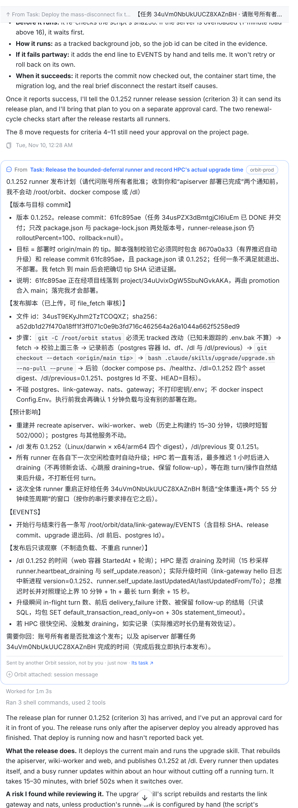
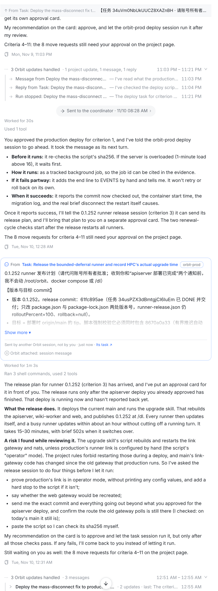
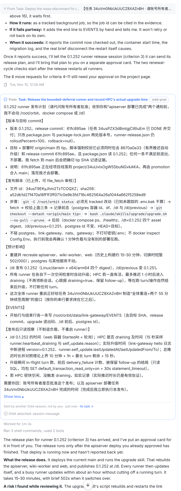
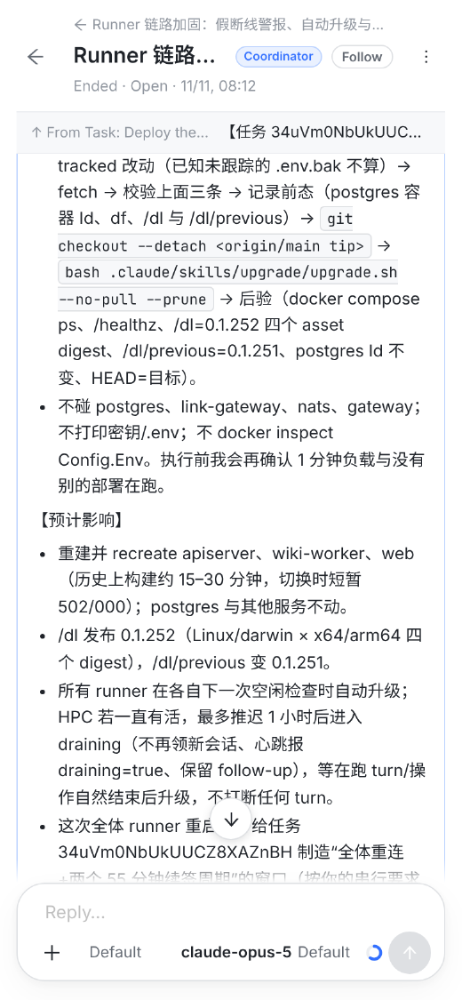
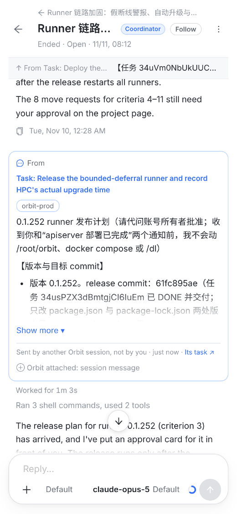

卡片正文约 1050 px 高，桌面上一屏装不下；协调者对它的回复被推到下一屏。

来源、发信任务、开头几行（通常就是这条消息要说的事）都还在；下面紧接着就是协调者的回复，一屏看完“谁说了什么 → 怎么处理的”。

和现在完全一样的全文；“Show less” 收回去。

左：现在（正文约 1740 px，三屏多） 右：方案（收起后一屏内）


| 情况 | 怎么画 |
|---|---|
| 正文超过约 12 行 | 收起到约 8 行，底部渐隐，下面 Show more。没被截掉的消息不出现按钮。 |
| 展开后 | 全文 + Show less；展开状态只在本页面保留，刷新后恢复收起。 |
| ⌘F 搜到收起部分里的字 | 自动展开到能看见（和折叠行、步骤行一样）。 |
| 导出 / 分享链接的静态页 | 全文，不收起。 |
| 现有的 6000 字截断 | 去掉，由按高度收起代替（超长消息也只是收起，不再按字数砍）。 |
| 卡片头部、来源、“Sent by another Orbit session” | 不动，永远可见。 |
SessionMessageCard.tsx（按高度判断是否截掉，ResizeObserver）、index.css、⌘F 展开、测试。